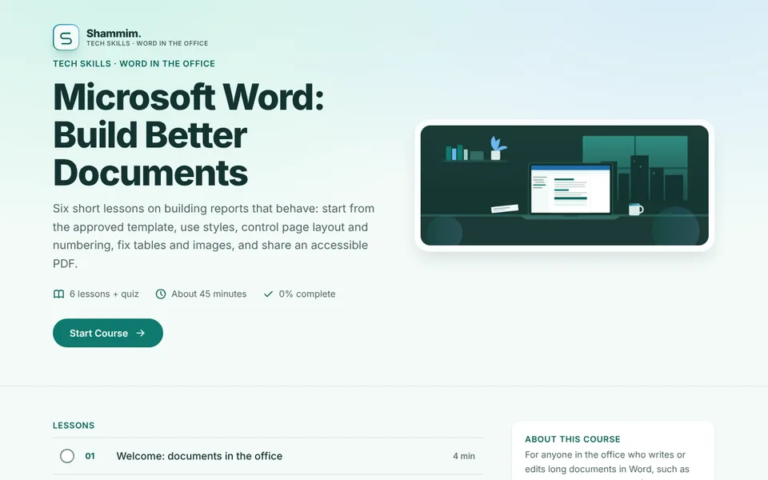

WD-00Course home

Microsoft Word: Build Better Documents
- On screen
- Six lessons and a quiz, about 45 minutes. Lesson list with time per lesson, and an About panel listing what the course includes.
- Interaction
- Start Course. Lessons unlock in order and the side menu shows progress.
- Audio
- None on this screen.